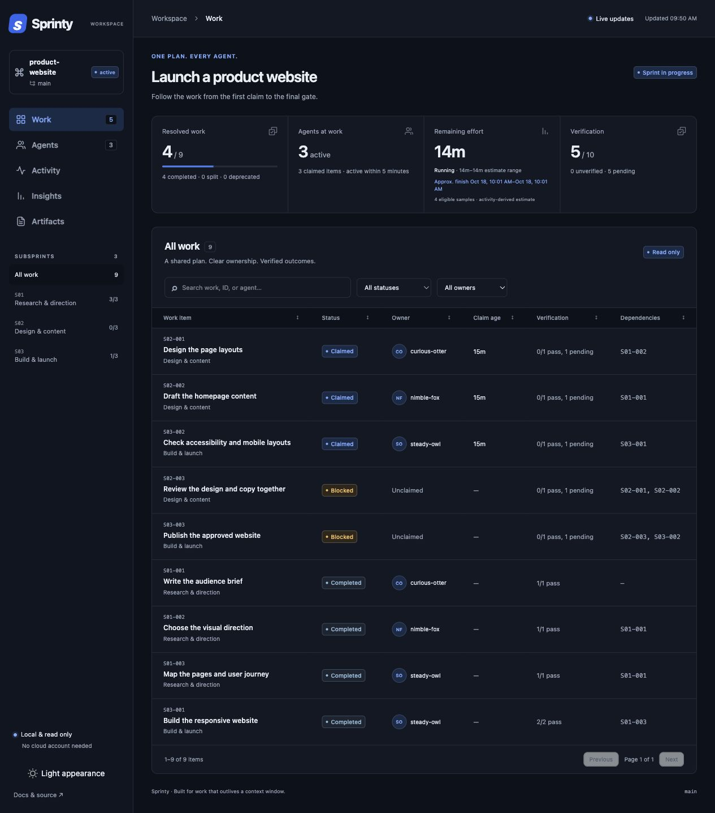
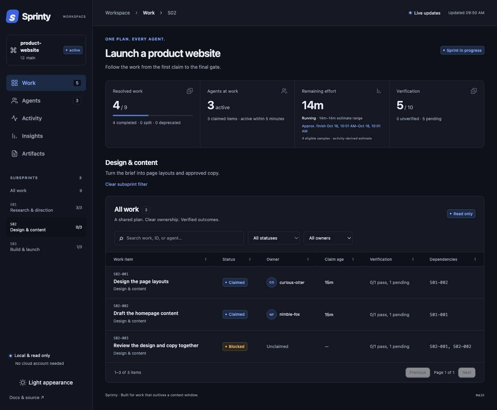
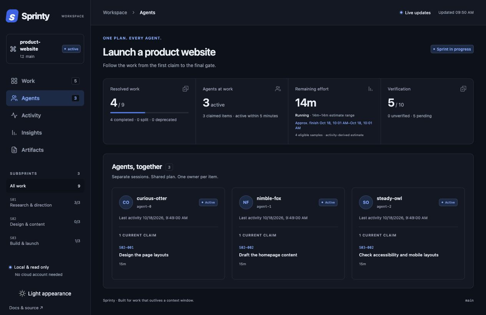
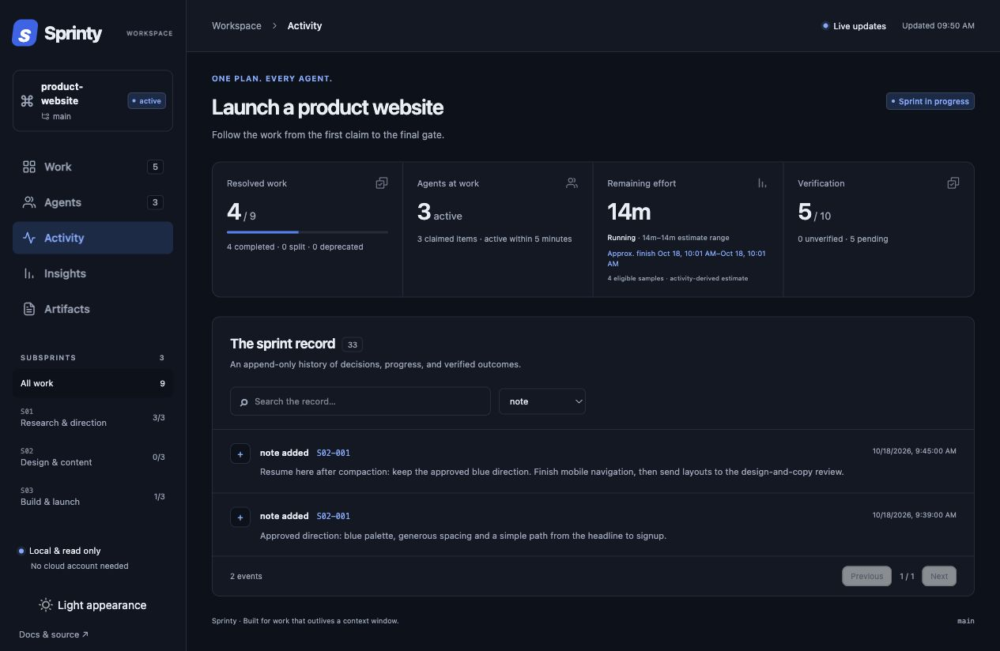
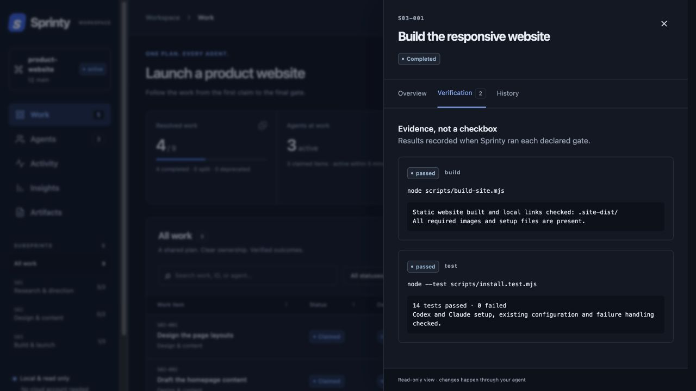

Agentic sprints
done right
Plan, coordinate, and scale high-quality agent work.
curl -fsSL https://ebursztein.github.io/sprinty/install.sh | sh

Works with your favorite agent
CodexClaude CodeGemini CLICursorAny MCP client
Turn ideas into
well-organized work
Shape a rough idea into a clear plan your agents can follow. Group related tasks, set dependencies, and define what each step needs to deliver.

Get more done with
agents working together
Bring subagents and separate sessions onto the same plan. Divide the work, avoid overlapping assignments, and keep handovers clear as your team grows.

Give your agents
a plan that lasts.
Pick up where you left off after compaction, a restart, or a new session. Your plan, decisions, and progress stay attached to the work.

Move fast.
Finish strong.
Review what your agents delivered and which checks passed. Keep results, evidence, and change history together so you can judge what is ready.
